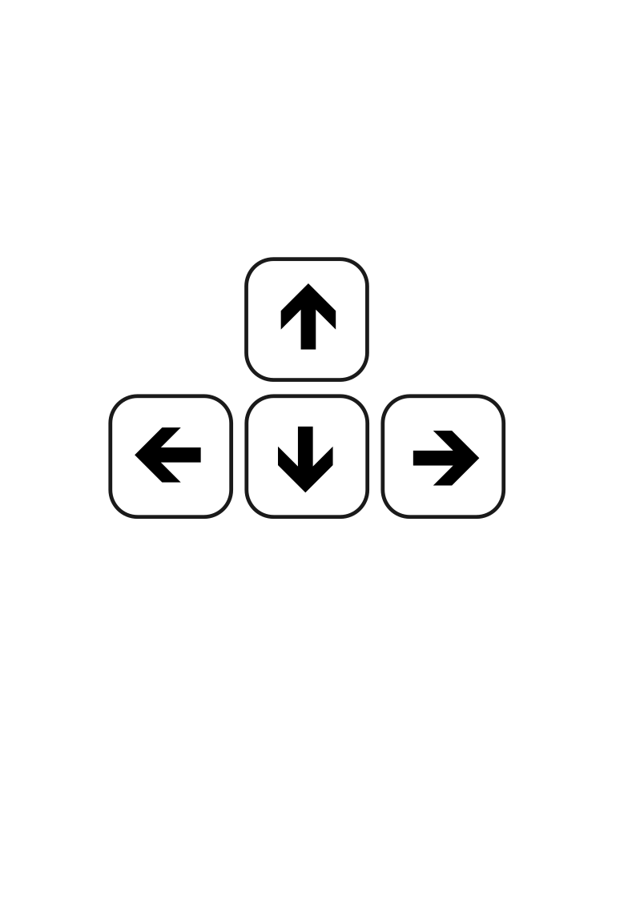
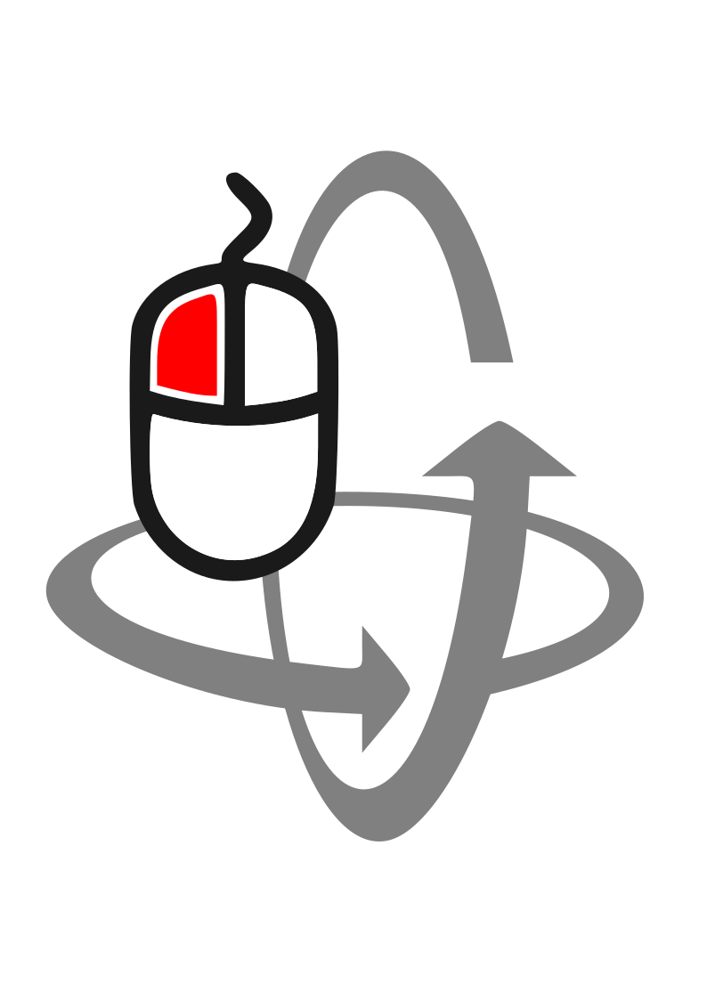
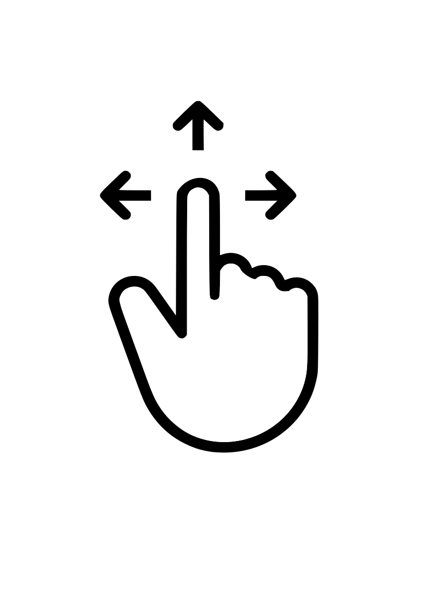
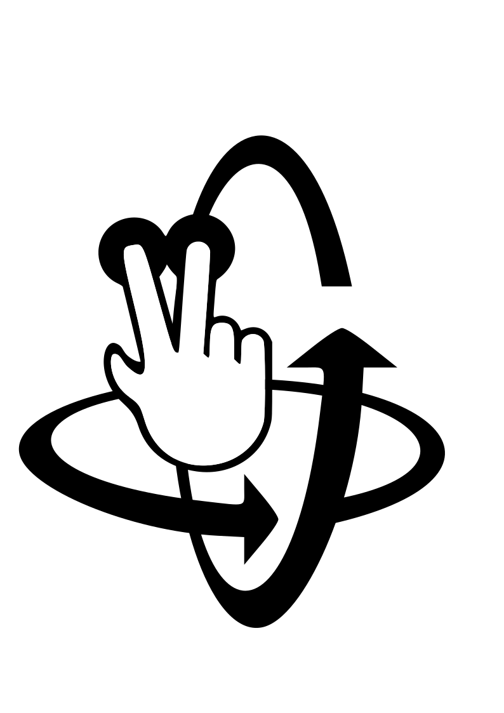

Pode deslocar-se no ambiente virtual de 3 formas diferentes:
1) Pode utilizar as teclas de seta para avançar, recuar, mover-se para a esquerda e para a direita. Pode arrastar o rato para olhar para cima/baixo ou rodar;


2) Num dispositivo móvel pode arrastar um dedo para avançar e dois dedos para rodar;


3) Numa galeria pode utilizar os botões de navegação manual. O botão ▶ permite ouvir o podcast correspondente à obra selecionada.
Para entrar numa galeria, clique na porta correspondente.
You can move in the virtual environment in 3 different ways:
1) You can use the arrow keys to move forward, backwards, left and right. You can drag the mouse to look up/down or spin;
2) On a mobile device you can drag one finger to move forward and drag 2 fingers to spin;
3) You can use the manual navigation buttons once you are in a gallery.
To go to a gallery click on the corresponding door.
Puedes moverte en el entorno virtual de 3 formas diferentes:
1) Puedes usar las teclas de flecha para moverte hacia adelante, atrás, izquierda y derecha. Puedes arrastrar el ratón para mirar arriba/abajo o girar;
2) En un dispositivo móvil puedes arrastrar un dedo para avanzar y dos dedos para girar;
3) Puedes usar los botones de navegación manual una vez que estés en una galería.
Para ir a una galería, haz clic en la puerta correspondiente.